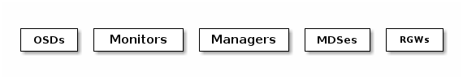

Notice
This document is for a development version of Ceph.
Intro to Ceph
Ceph can be used to provide Ceph Object Storage to Cloud Platforms and Ceph can be used to provide Ceph Block Device services to Cloud Platforms. Ceph can be used to deploy a Ceph File System. All Ceph Storage Cluster deployments begin with setting up each Ceph Node and then setting up the network.
A Ceph Storage Cluster requires the following: at least one Ceph Monitor and at least one Ceph Manager, and at least as many Ceph Object Storage Daemons (OSDs) as there are copies of a given object stored in the Ceph cluster (for example, if three copies of a given object are stored in the Ceph cluster, then at least three OSDs must exist in that Ceph cluster).
The Ceph Metadata Server is necessary to run Ceph File System clients.
Note
It is a best practice to have a Ceph Manager for each Monitor, but it is not necessary.

Monitors: A Ceph Monitor (
ceph-mon) maintains maps of the cluster state, including the monitor map, manager map, the OSD map, the MDS map, and the CRUSH map. These maps are critical cluster state required for Ceph daemons to coordinate with each other. Monitors are also responsible for managing authentication between daemons and clients. At least three monitors are normally required for redundancy and high availability.Managers: A Ceph Manager daemon (
ceph-mgr) is responsible for keeping track of runtime metrics and the current state of the Ceph cluster, including storage utilization, current performance metrics, and system load. The Ceph Manager daemons also host python-based modules to manage and expose Ceph cluster information, including a web-based Ceph Dashboard. At least two managers are normally required for high availability.Ceph OSDs: An Object Storage Daemon (Ceph OSD,
ceph-osd) stores data, handles data replication, recovery, rebalancing, and provides some monitoring information to Ceph Monitors and Managers by checking other Ceph OSD Daemons for a heartbeat. At least three Ceph OSDs are normally required for redundancy and high availability.MDSes: A Ceph Metadata Server (MDS,
ceph-mds) stores metadata for the Ceph File System. Ceph Metadata Servers allow CephFS users to run basic commands (likels,find, etc.) without placing a burden on the Ceph Storage Cluster.RGWs: A Ceph Object Gateway (RGW,
ceph-radosgw) daemon provides a RESTful gateway between applications and Ceph storage clusters. The S3-compatible API is most commonly used, though Swift is also available.
Ceph stores data as objects within logical storage pools. Using the CRUSH algorithm, Ceph calculates which placement group (PG) should contain the object, and which OSD should store the placement group. The CRUSH algorithm enables the Ceph Storage Cluster to scale, rebalance, and recover dynamically.
Recommendations
To begin using Ceph in production, you should review our hardware recommendations and operating system recommendations.
Get Involved
You can avail yourself of help or contribute documentation, source code or bugs by getting involved in the Ceph community.
Brought to you by the Ceph Foundation
The Ceph Documentation is a community resource funded and hosted by the non-profit Ceph Foundation. If you would like to support this and our other efforts, please consider joining now.